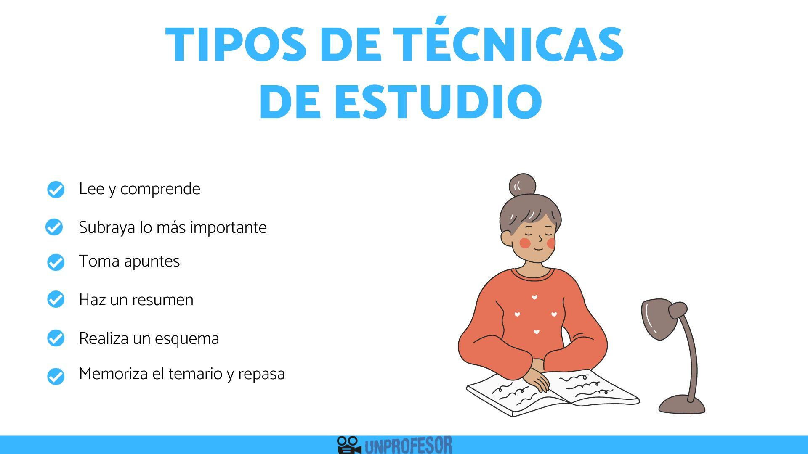
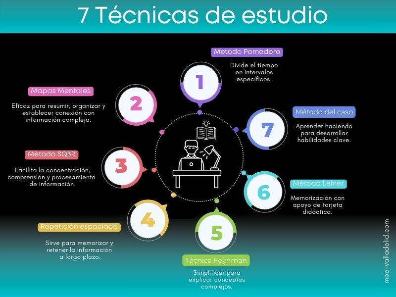

Las técnicas de estudio son un conjunto de estrategias y herramientas que hacen que el acto de estudiar sea más eficiente y mucho más fácil de comprender. Ya que son muy útiles cuando se estudia ya que facilita y mejora la comprensión y se amplía el conocimiento. Es decir, permiten estudiar más en menos tiempo. Las estrategias son una gran herramienta la cual es muy útil a la hora de estudiar ya que te facilita la compresión de los temas y ayuda a los mismos se hagan mucho más fácil de entender, es por eso que es importante tomar estas estrategias y técnicas para aplicarlas el ámbito de estudio.
Las técnicas de estudio son herramientas o estrategias que facilitan el proceso de estudio en el proceso de aprendizaje. Buscan que el estudiante amplíe su capacidad para retener información, ampliando su concentración, así como también, su motivación para continuar aprendiendo y estudiando. La utilización de las técnicas de estudio son muy recomendables, cualquiera sea el área o el nivel de estudio del estudiante, educación primaria, media o escuela secundaria y hasta para la educación universitaria, etc. Sin embargo, si bien son de gran ayuda, los especialistas en la materia afirman que las técnicas o métodos de estudio requieren de una actitud activa, donde quien estudia asuma el protagonismo y supere la pasividad.
·Resumen
·Toma de apuntes
·Síntesis
·Mapa Conceptual
·Mapa Mental
·Cuadro Sinóptico
·Estudio de Casos
·Infografías
·Poner en práctica lo aprendido
·Análisis de Contenidos
·Autoevaluación
·Administrar el Tiempo
·Organización a Estudiar
·Organización de Tareas, Trabajos, proyectos, etc.
·Controlar Nervios o Impulsos Negativos
·Subrayar o resaltar información importante
·Hacer esquemas o mapas conceptuales
·Estar atento a clase y anotar los más relevante
·Crear tu propio diccionario
·Ser organizado en el estudio
·Tener un buen descanso
·Tener el lugar de trabajo limpio y recogido
·Estudiar los temas que no sabes
·Crear tarjetas de estudio
·Asociar los contenidos a tus gustos
·Buscar videos
·Crear o juntarte con personas estudiosas
·Repasar siempre los apuntes
·Estar siempre motivado